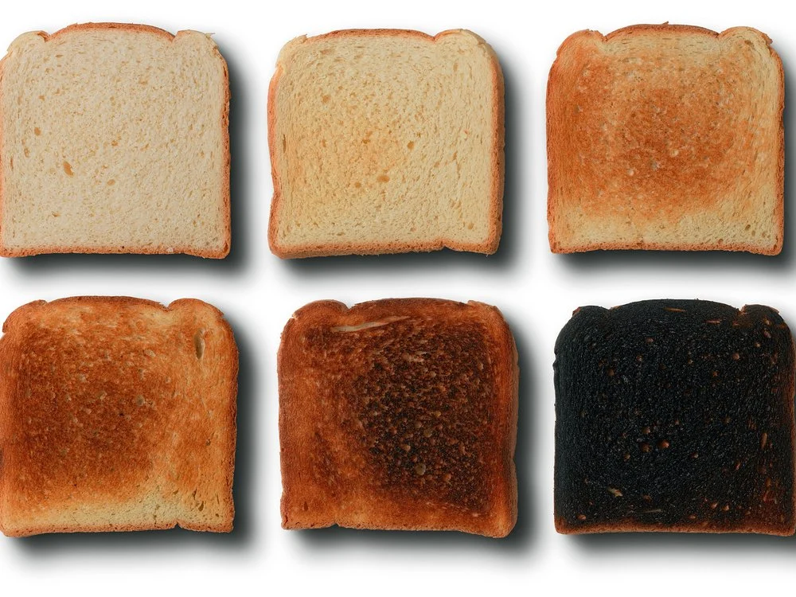

Gourmet Burnt Toast

Return to the recipe directory
Description
What's that you say? You feel a stroke coming on? Fear not, for that is no mere phantosmia you seem to be experiencing. Nay, 'tis the powerful scent of a single, perfect, piece of pure burnt toast, ready for your breakfast pleasure! But how shall you enjoy this sweet ambrosia, the food of gods? The recipe couldn't be any simpler. Follow the instructions below, and your life will never be the same.
Ingredients
- Bread (any bread will do)
- A toaster (a fire, stove, oven, BBQ, or torch will work similarly)
- Finnish mustard (optional)
- Horse radish (optional)
- Kimchi (optional)
Steps
- Purchase bread
- Turn on fire implement
- Place bread over/on/in fire receptacle of choice
- Burn to taste
- Common ranges include a light golden colour to that of a darkened abyss
- Slather with condiment(s) of choice
- You may choose to use any or all of the optional condiments listed above, however, we find the optimal combination to be an even ratio of all 3
- Enjoy!